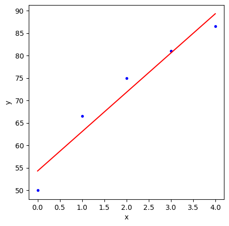
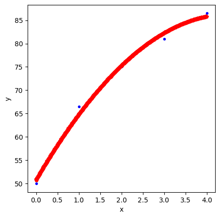

from sympy import Matrix,eyeInversa generalizada de Moore-Penrose
Existen varias formas de calcular la inversa generalizada de Moore-Penrose de una matriz. Aquí expondremos algunas de ellas usando diversas librerías de sympy.
Cálculo a partir de una descomposición en valores singulares
Si \(A\) es una matriz con entradas reales y \(UDV^t\) es una descomposición en valores singulares corta de \(A\), entonces por la demostración del Teorema VI.2.2 de [I. Ojeda, J. Gago, Métodos matemáticos para la Estadística] la inversa generalizada de Moore-Penrose de \(A\) es \(A^\dagger=VD^{-1}U^t\).
Ilustremos este cálculo usando los Ejemplos VI.1.8 y VI.2.3 de [I. Ojeda, J. Gago, Métodos matemáticos para la Estadística].
Vamos a utilizar singular_value_decomposition que apareció en la versión 1.8 de sympy. Si nuestra versión es anterior, podemos ejecutar pip install "sympy>=1.8" (luego tenemos que reiniciar el núcleo).
A=Matrix([(2,0,1),(3,-1,1),(-2,4,1),(1,1,1)])
A\(\displaystyle \left[\begin{matrix}2 & 0 & 1\\3 & -1 & 1\\-2 & 4 & 1\\1 & 1 & 1\end{matrix}\right]\)
Para calcular la inversa generalizada de Moore-Penrose usamos pinv.
A.pinv()\(\displaystyle \left[\begin{matrix}\frac{5}{42} & \frac{13}{84} & - \frac{1}{42} & \frac{1}{12}\\\frac{1}{21} & \frac{1}{84} & \frac{4}{21} & \frac{1}{12}\\\frac{1}{12} & \frac{1}{12} & \frac{1}{12} & \frac{1}{12}\end{matrix}\right]\)
Usando svd
Como hemos visto, para calcular la descomposición en valores singulares, podemos utilizar svd.
U,D,V=A.singular_value_decomposition()
U\(\displaystyle \left[\begin{matrix}\frac{1}{2} & - \frac{\sqrt{14}}{14}\\\frac{1}{2} & - \frac{\sqrt{14}}{7}\\\frac{1}{2} & \frac{3 \sqrt{14}}{14}\\\frac{1}{2} & 0\end{matrix}\right]\)
D\(\displaystyle \left[\begin{matrix}2 \sqrt{3} & 0\\0 & 2 \sqrt{7}\end{matrix}\right]\)
V\(\displaystyle \left[\begin{matrix}\frac{\sqrt{3}}{3} & - \frac{\sqrt{2}}{2}\\\frac{\sqrt{3}}{3} & \frac{\sqrt{2}}{2}\\\frac{\sqrt{3}}{3} & 0\end{matrix}\right]\)
igA=V*D.inv()*U.T
igA\(\displaystyle \left[\begin{matrix}\frac{5}{42} & \frac{13}{84} & - \frac{1}{42} & \frac{1}{12}\\\frac{1}{21} & \frac{1}{84} & \frac{4}{21} & \frac{1}{12}\\\frac{1}{12} & \frac{1}{12} & \frac{1}{12} & \frac{1}{12}\end{matrix}\right]\)
Veamos que verifica las condiciones de inversa generalizada.
\(AA^\dagger A=A\):
A*igA*A==ATrue\(A^\dagger A A^\dagger=A^\dagger\):
igA*A*igA==igATrue\(A A^\dagger\) y \(A^\dagger A\) son simétricas:
(A*igA).is_symmetric()True(igA*A).is_symmetric()TrueCálculo a partir de una factorización de rango pleno
Podemos calcular la inversa generalizada una vez que conozcamos una factorización de rango pleno de la matriz. Ilustramos este proceso siguiendo los pasos que se explican en [L. Merino, E. Santos, Álgebra Lineal con Métodos Elementales].
E,F=A.rank_decomposition()
E\(\displaystyle \left[\begin{matrix}2 & 0\\3 & -1\\-2 & 4\\1 & 1\end{matrix}\right]\)
F\(\displaystyle \left[\begin{matrix}1 & 0 & \frac{1}{2}\\0 & 1 & \frac{1}{2}\end{matrix}\right]\)
E*F==ATrueEl rango de E y de F coincide con el rango de A.
El siguiente paso es calcular una inversa por la derecha de F y una inversa por la izquierda de E. Al ser ambas de rango pleno for fillas y por columnas, respectivamente, esto se puede hacer de la siguiente forma.
FR=F.T*(F*F.T).inv()
FR\(\displaystyle \left[\begin{matrix}\frac{5}{6} & - \frac{1}{6}\\- \frac{1}{6} & \frac{5}{6}\\\frac{1}{3} & \frac{1}{3}\end{matrix}\right]\)
F*FR\(\displaystyle \left[\begin{matrix}1 & 0\\0 & 1\end{matrix}\right]\)
EL=(E.T*E).inv()*E.T
EL\(\displaystyle \left[\begin{matrix}\frac{9}{56} & \frac{11}{56} & \frac{1}{56} & \frac{1}{8}\\\frac{5}{56} & \frac{3}{56} & \frac{13}{56} & \frac{1}{8}\end{matrix}\right]\)
EL*E\(\displaystyle \left[\begin{matrix}1 & 0\\0 & 1\end{matrix}\right]\)
igrpA=FR*EL
igrpA==A.pinv()TrueLa descomposición de rango pleno también se puede hacer usando la forma normal reducida por filas.
frA=Matrix.hstack(A,eye(4)).rref(pivots=False)
frA\(\displaystyle \left[\begin{matrix}1 & 0 & \frac{1}{2} & 0 & 0 & - \frac{1}{6} & \frac{2}{3}\\0 & 1 & \frac{1}{2} & 0 & 0 & \frac{1}{6} & \frac{1}{3}\\0 & 0 & 0 & 1 & 0 & \frac{1}{3} & - \frac{4}{3}\\0 & 0 & 0 & 0 & 1 & \frac{2}{3} & - \frac{5}{3}\end{matrix}\right]\)
Q=frA[:,3:]
H=frA[:,:3]
Q\(\displaystyle \left[\begin{matrix}0 & 0 & - \frac{1}{6} & \frac{2}{3}\\0 & 0 & \frac{1}{6} & \frac{1}{3}\\1 & 0 & \frac{1}{3} & - \frac{4}{3}\\0 & 1 & \frac{2}{3} & - \frac{5}{3}\end{matrix}\right]\)
H\(\displaystyle \left[\begin{matrix}1 & 0 & \frac{1}{2}\\0 & 1 & \frac{1}{2}\\0 & 0 & 0\\0 & 0 & 0\end{matrix}\right]\)
Como \(QA=H\), haciendo \(Q^{-1}H\) recuperamos \(A\). Como las dos últimas filas de \(H\) son cero, sólo nos interesan las dos primeras filas \(H\) y las dos primeras columnas de \(Q^{-1}\).
Q.inv()*H\(\displaystyle \left[\begin{matrix}2 & 0 & 1\\3 & -1 & 1\\-2 & 4 & 1\\1 & 1 & 1\end{matrix}\right]\)
E==Q.inv()[:,:2]TrueF==H[:2,:]TrueSoluciónes mínimo cuadráticas
Una de las aplicaciones de la inversa generalizada de Moore-Penrose es el cálculo de soluciones óptimas (o de norma mínima) minimo-cuadráticas de un sistema de ecuaciones. Si \(Ax=b\) es un sistema de ecuaciones, entonces la solución óptima mínimo-cuadrática de ese sistema es \(A^\dagger b\).
Ilustremos esta construcción con el Ejemplo 13 (Capítulo VII) de [L. Merino, E. Santos, Álgebra Lineal con Métodos Elementales].
Ejemplo
Calcular una solución óptima mínimo-cuadrática del sistema \(Ax=b\) con \[ A=\begin{pmatrix} 2 & 0 & 2 & 0 \\ 1 & 1 & 2 & 1 \\ -1 & 3 & 2 & 3 \end{pmatrix} \] y \(b=(6,0,2)^t\).
A=Matrix([(2,0,2,0),(1,1,2,1),(-1,3,2,3)])
A\(\displaystyle \left[\begin{matrix}2 & 0 & 2 & 0\\1 & 1 & 2 & 1\\-1 & 3 & 2 & 3\end{matrix}\right]\)
b=Matrix([6,0,2])igA=A.pinv()
igA\(\displaystyle \left[\begin{matrix}\frac{1}{5} & \frac{1}{10} & - \frac{1}{10}\\- \frac{3}{70} & \frac{1}{70} & \frac{9}{70}\\\frac{11}{70} & \frac{4}{35} & \frac{1}{35}\\- \frac{3}{70} & \frac{1}{70} & \frac{9}{70}\end{matrix}\right]\)
xo=igA*b
xo\(\displaystyle \left[\begin{matrix}1\\0\\1\\0\end{matrix}\right]\)
El sistema no es compatible, ya que \(Ax\neq b\).
A*xo\(\displaystyle \left[\begin{matrix}4\\3\\1\end{matrix}\right]\)
El siguiente ejemplo se corresponde con los Ejemplos 14 y 15 (Capítulo VII) de [L. Merino, E. Santos, Álgebra Lineal con Métodos Elementales].
Ejemplo
La siguiente tabla muestra la estatura media de los niños de cero a cuatro semestres de vida
| x | 0 | 1 | 2 | 3 | 4 |
|---|---|---|---|---|---|
| y | 50 | 66.5 | 75 | 81 | 86.5 |
Intentemos ajustar una recta \(y=ax+b\). Idealmente, por los datos que tenemos \[ \begin{array}{rcl} b & =& 50,\\ a + b & =& 66.5,\\ 2a+b &=& 75,\\ 3a+b &=& 81,\\ 4a+b &=& 86.5. \end{array} \] Que podemos escribir en forma de matriz como \[ \begin{pmatrix} 0 & 1\\ 1 & 1\\ 2 & 1\\ 3 & 1\\ 4 & 1 \end{pmatrix} \begin{pmatrix} a \\ b \end{pmatrix} = \begin{pmatrix} 50 \\ 66.5 \\ 75 \\ 81 \\ 86.5 \end{pmatrix}. \]
A=Matrix([range(5),[1]*5]).T
A\(\displaystyle \left[\begin{matrix}0 & 1\\1 & 1\\2 & 1\\3 & 1\\4 & 1\end{matrix}\right]\)
alt=Matrix((50,66.5,75,81,86.5))
alt\(\displaystyle \left[\begin{matrix}50\\66.5\\75\\81\\86.5\end{matrix}\right]\)
igA=A.pinv()
igA\(\displaystyle \left[\begin{matrix}- \frac{1}{5} & - \frac{1}{10} & 0 & \frac{1}{10} & \frac{1}{5}\\\frac{3}{5} & \frac{2}{5} & \frac{1}{5} & 0 & - \frac{1}{5}\end{matrix}\right]\)
xo=igA*alt
xo\(\displaystyle \left[\begin{matrix}8.75\\54.3\end{matrix}\right]\)
a,b = tuple(xo)Así nuestra recta de aproximación es \(y=8.75x+54.3\).
from matplotlib import pyplotpyplot.figure(figsize = (5,5))
x=range(5)
y=alt.T.tolist()[0]
r=[a*t+b for t in x]
pyplot.plot(x, y, 'b.')
pyplot.plot(x, r, 'r')
pyplot.xlabel('x')
pyplot.ylabel('y')
pyplot.show()
Ejemplo
Supongamos que en nuestro problema de edades y alturas queremos ajustar \(y\) por un polinomio de grado dos en \(x\), \(y=ax^2+bx+c\). Evaluando ese polinomio en los valores que conocemos en \(x\) y en \(y\), obtenemos \[ \begin{pmatrix} 0 & 0 & 1\\ 1 & 1 & 1\\ 4 & 2 & 1\\ 9 & 3 & 1\\ 16 & 4 & 1 \end{pmatrix} \begin{pmatrix} a \\ b \\ c \end{pmatrix} = \begin{pmatrix} 50 \\ 66.5 \\ 75 \\ 81 \\ 86.5 \end{pmatrix}. \]
A=Matrix([[i**2 for i in range(5)],range(5),[1]*5]).T
A\(\displaystyle \left[\begin{matrix}0 & 0 & 1\\1 & 1 & 1\\4 & 2 & 1\\9 & 3 & 1\\16 & 4 & 1\end{matrix}\right]\)
igA=A.pinv()
igA\(\displaystyle \left[\begin{matrix}\frac{1}{7} & - \frac{1}{14} & - \frac{1}{7} & - \frac{1}{14} & \frac{1}{7}\\- \frac{27}{35} & \frac{13}{70} & \frac{4}{7} & \frac{27}{70} & - \frac{13}{35}\\\frac{31}{35} & \frac{9}{35} & - \frac{3}{35} & - \frac{1}{7} & \frac{3}{35}\end{matrix}\right]\)
xo=igA*alt
xo\(\displaystyle \left[\begin{matrix}-1.75\\15.75\\50.8\end{matrix}\right]\)
a,b,c=tuple(xo)pyplot.figure(figsize = (5,5))
x=range(5)
y=alt.T.tolist()[0]
xp=[i/100 for i in range(400)]
p=[a*t**2+b*t+c for t in xp]
pyplot.plot(x, y, 'b.')
pyplot.plot(xp, p, 'p',c="r",linewidth=0.1)
pyplot.xlabel('x')
pyplot.ylabel('y')
pyplot.show()
En nuestros dos últimos ejemplos, \(A\) es de rango pleno por columnas, por lo que la solución minimo-cuadrática podríamos haberla calculado con \(A^L=(A^tA)^{-1}A^t\) (inversa a la izquierda de \(A\)).
AL=(A.T*A).inv()*A.T
AL\(\displaystyle \left[\begin{matrix}\frac{1}{7} & - \frac{1}{14} & - \frac{1}{7} & - \frac{1}{14} & \frac{1}{7}\\- \frac{27}{35} & \frac{13}{70} & \frac{4}{7} & \frac{27}{70} & - \frac{13}{35}\\\frac{31}{35} & \frac{9}{35} & - \frac{3}{35} & - \frac{1}{7} & \frac{3}{35}\end{matrix}\right]\)
AL==igATrue